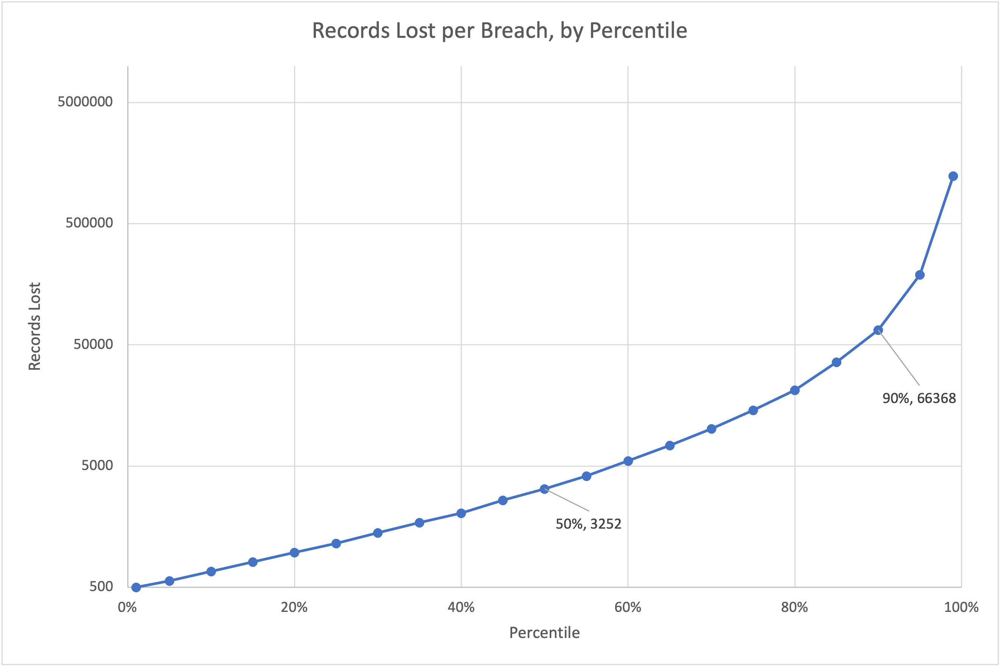

Breach Risk Assessment: Medical Sector
Group project • ISDS 4096, LSU • Spring 2025
Breaches per year
Data covers healthcare breach incidents from 2010 to 2022. Hover over any bar to view exact breach counts.
My Role

I built the statistical analysis of breach size in Excel. Most breaches were small, with a median of 3,252 records, but a handful were enormous: the top 1% exceeded 1.2 million records each, and the largest (Anthem, 2015) exposed 78.8 million.
Top Threats and Controls
2024 Incidents We Studied
Change Healthcare
Ransomware entered through a remote-access portal without multi-factor authentication, exposing data of about 192.7 million people, the largest U.S. healthcare breach on record. Lesson: two-factor authentication.
Kaiser Foundation Health Plan
Tracking code on Kaiser's website and apps shared 13.4 million members' information with advertisers, with no hacker involved. Lesson: unauthorized disclosure can come from inside.
Ascension Health
An employee downloaded a malicious file, triggering ransomware that took systems offline and exposed data of about 5.6 million people. Lesson: employee training.